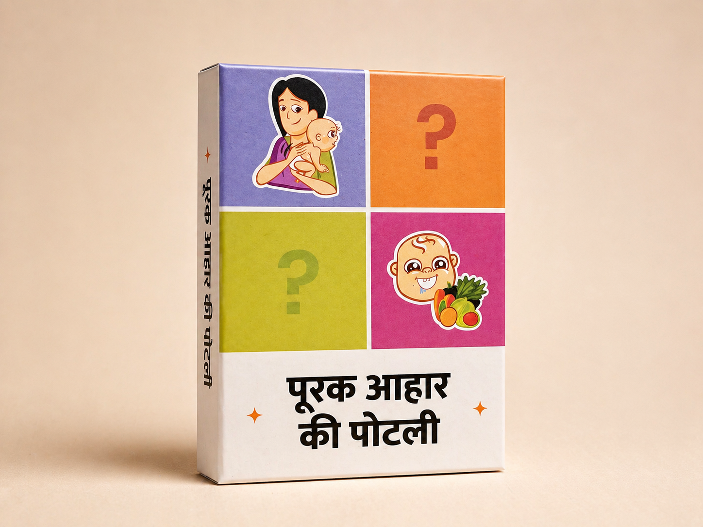
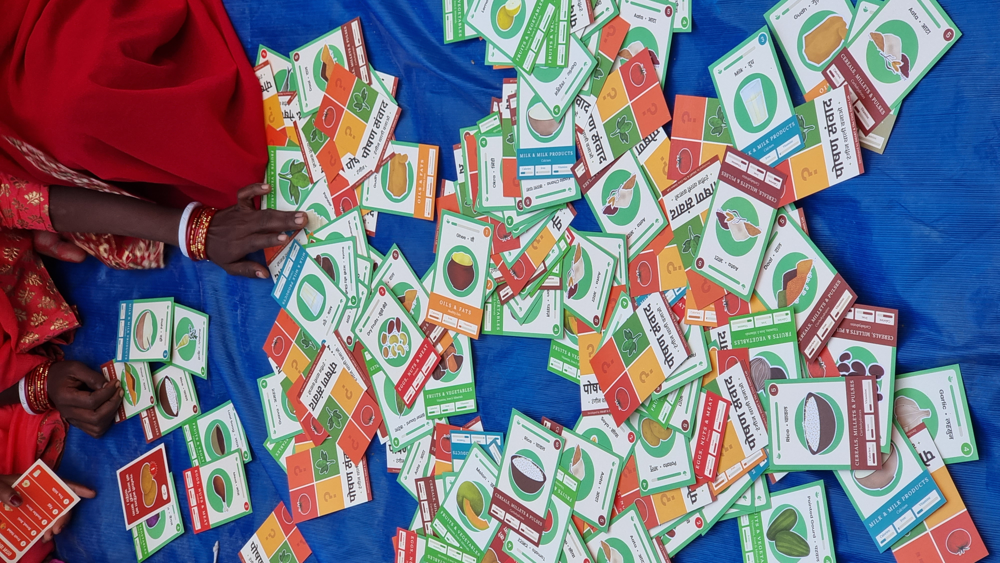

In play
Gameplay photographyPurak Ahaar

Gameplay session

Facilitated play

Group session

Participants
Complementary nutrition and early-life food practices as a playable framework — designed for ASHA workers, Anganwadi facilitators, and community health contexts.

About the game
Purak Ahaar — Complementary Food — is a game built around the critical window of early-life nutrition: the first 1,000 days from conception to age two. Players navigate the introduction of complementary foods, breastfeeding practices, and early childhood feeding decisions — with a focus on the knowledge and confidence of caregivers and frontline workers.
The game is designed for the specific challenge of complementary feeding: the transition from exclusive breastfeeding to diverse solid foods is a high-stakes nutritional window where behaviour change is possible but knowledge is often inadequate. Purak Ahaar builds the practical knowledge and facilitation capacity to support that transition.
01 — Design
Built through co-design with ASHA workers, Anganwadi facilitators, district nutrition officers, and mothers of infants across several states. The game scenarios are drawn from real challenges documented in frontline nutrition practice — not from textbook nutrition guidelines.
The design question: what does an ASHA worker need to know and feel to confidently counsel mothers on complementary feeding? The answer shaped the game's knowledge content, scenario structure, and facilitation format.
02 — Development
A card game for frontline health worker training and community health settings.
The game is structured around three developmental stages: 6–8 months, 9–11 months, and 12–24 months — each with distinct complementary feeding requirements.
Players navigate the introduction of new foods: frequency, texture, food groups, and volume — building practical knowledge of age-appropriate complementary feeding.
Real-scenario cards introduce common challenges: mother returning to work, family pressure to start solids early, limited food access, illness during the feeding window.
Card game for 4–12 players. 60–90 minutes. Designed for ASHA and AWW training, district nutrition officer induction, and community mother group sessions.
03 — Deployment
Purak Ahaar is deployed through ICDS systems, nutrition programmes, and frontline health training contexts.
Used in Integrated Child Development Services and ASHA worker training to build complementary feeding knowledge and counselling confidence.
Deployed in community mother group sessions as an engaging knowledge-building tool for early childhood nutrition.
Run in programme partner organisations working on early childhood nutrition — SAM/MAM prevention, stunting reduction, and IYCF programmes.
Outcomes
Frontline workers and caregivers build practical knowledge of complementary feeding and confidence to counsel and practice it.
ASHA workers and mothers develop precise knowledge of age-appropriate complementary feeding — frequency, texture, food groups, and volume.
Frontline workers practise counselling in a safe environment — building the confidence to address real challenges mothers face.
Scenario challenges build awareness of the practical and social barriers to optimal feeding — enabling more realistic and effective support.
The combination of knowledge and rehearsal builds the foundation for behaviour change in complementary feeding practice.
Use Purak Ahaar in your ASHA training curriculum, ICDS programme, or early childhood nutrition initiative. We supply the game and facilitation support.
Get in touch →
Nutrition literacy through food groups and local recipes for community health settings.

Community water crisis — governance, behaviour, and risk as a civic story and system.

Panchayat governance — rural planning, budgets, and the real trade-offs of local government.